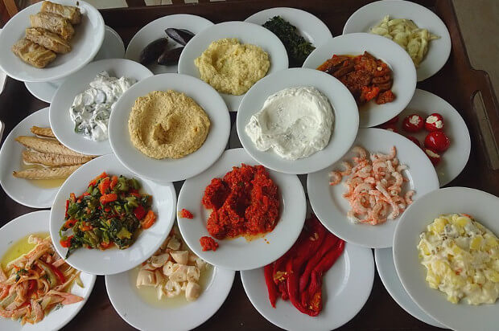

HOME |
HISTORIA |
CULTURA |
GEOGRAFIA |
DADOS |
CURIOSIDADES |
TURISMO |
CONTATO |
Cultura
A cultura turca é um fascinante encontro de influências que se estendem por séculos de história. Desde os tempos antigos até os dias atuais, esta terra mítica tem sido um ponto de encontro de civilizações, cada uma contribuindo para a riqueza e complexidade de sua cultura. Na interseção da Europa e da Ásia, a Turquia oferece uma tapeçaria de tradições, uma fusão de elementos orientais e ocidentais que dá vida a uma identidade única e cativante.
A culinária turca é uma celebração de sabores vibrantes e aromas sedutores, refletindo a diversidade geográfica do país e as influências das culturas vizinhas. Dos kebabs suculentos às deliciosas mezes (aperitivos), passando pelos famosos doces turcos como o baklava e o lokum, cada prato é uma jornada gastronômica que evoca os sentidos e conecta as pessoas em torno da mesa.
A música desempenha um papel central na cultura turca, com uma tradição musical que remonta a milênios. Dos sons hipnóticos do saz turco às melodias cativantes dos flautistas de Ney, a música turca é uma expressão profunda da alma do povo, transmitindo emoções que transcendem fronteiras e idiomas.
A arquitetura turca é uma narrativa visual de sua rica história, com marcos emblemáticos que contam contos de impérios perdidos, batalhas épicas e triunfos culturais. Desde os majestosos palácios otomanos até as antigas ruínas gregas e romanas, cada estrutura é um testemunho da habilidade e criatividade dos arquitetos e artesãos turcos ao longo dos séculos.
A dança é uma expressão vibrante da cultura turca, com uma variedade de estilos que refletem a diversidade étnica do país. Do frenético ritmo do halay às graciosas danças folclóricas, cada movimento conta uma história, celebrando a alegria da vida e a conexão comunitária.
Além disso, a Turquia é um país onde a hospitalidade é uma tradição sagrada, onde os visitantes são recebidos de braços abertos e tratados como família. Esta generosidade de espírito é um reflexo do caráter do povo turco, caloroso, acolhedor e orgulhoso de sua herança cultural.
Em suma, a cultura turca é uma tapeçaria complexa e fascinante, onde tradição e modernidade se entrelaçam em uma dança harmoniosa. É uma celebração da diversidade, da criatividade e da resiliência do povo turco, que continua a inspirar e encantar o mundo com sua beleza e sua riqueza.

Lucas Alves 2024 - ©Todos os direitos reservados.